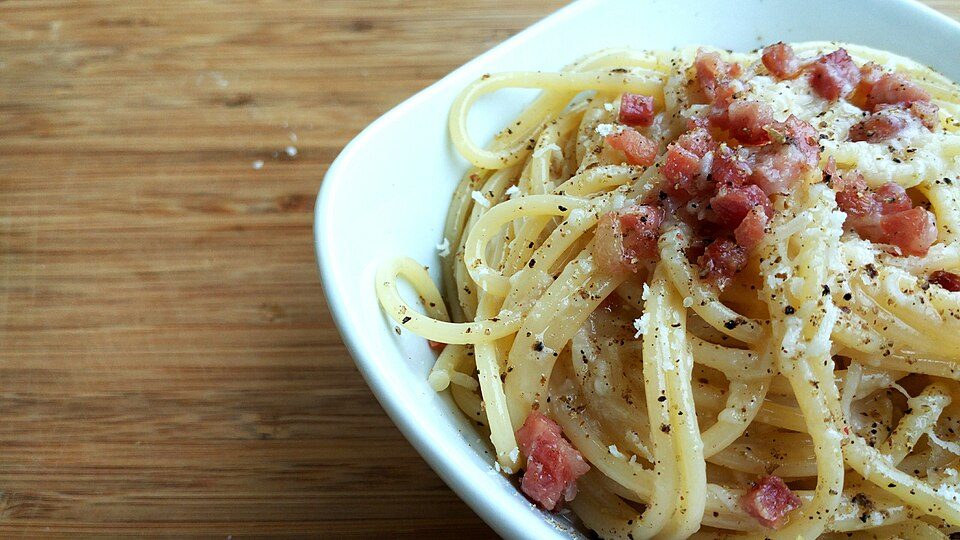

Carbonara
Home

A classic Italian pasta dish made with eggs, cheese, pancetta, and pepper.
Ingredients:
- 12 ounces spaghetti
- 2 large eggs
- 1 cup grated Parmesan cheese
- 4 ounces pancetta or bacon, diced
- 4 cloves garlic, minced
- Salt and freshly ground black pepper to taste
- 2 tablespoons chopped fresh parsley (optional)
Steps:
- Cook the spaghetti according to package instructions.
- In a large bowl, whisk together the eggs and Parmesan cheese.
- Meanwhile, cook the pancetta in a large skillet until crispy.
- Drain the cooked spaghetti, reserving 1 cup of pasta water.
- Combine the hot spaghetti with the pancetta and garlic in the skillet.
- Remove from heat and quickly stir in the egg and cheese mixture, adding pasta water as needed to create a creamy sauce.
- Season with salt and pepper to taste.
- Garnish with chopped parsley if desired.